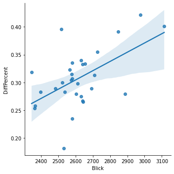

Tops and flops of the month
In a nutshell: what was the best and worst day of the month in the competition for visits between Blick and 20 Minuten?
November 2021 daily visitors
In a nutshell: what was the best and worst day of the month in the competition for visits between Blick and 20 Minuten?
Woaw!
On 07.11.2021, Blick was closest to 20 Minuten, with a 18% difference in visits only (that's 12% smaller than average).
This day, we had 2,531,300 visits (vs 3,037,600 for 20 Minuten).
This was our #23 day of the Month in terms of visits.
These were the most trending Twitter topics in Switzerland on that day:
#Wettendass, #MUNMCI, De Gea, Migros, #Worlds2021
Well, not so good…
On 30.11.2021, Blick was really distanciated by 20 Minuten, with a 42% difference in visits (that's 11% more than average). This is our worst day in the battle.
This day, we had 2,974,700 visits (vs 4,565,600 for 20 Minuten).
This was our #2 day of the Month in terms of visits.
These were the most trending Twitter topics on that day:
#BallonDor, Messi, Lewandowski, #Omicron, #Binance
For each day, the top news of the days for Switzerland, according to a service called Gnews.io.
Unfortunately, we are not so sure the data is reliable, but the very reliable Google doesn't provide a history of top news.
Linear correlation between # of visits and gap between Blick and 20 Minuten?

Pearson's R: (0.5491972785904174, 0.0016716010490178226)